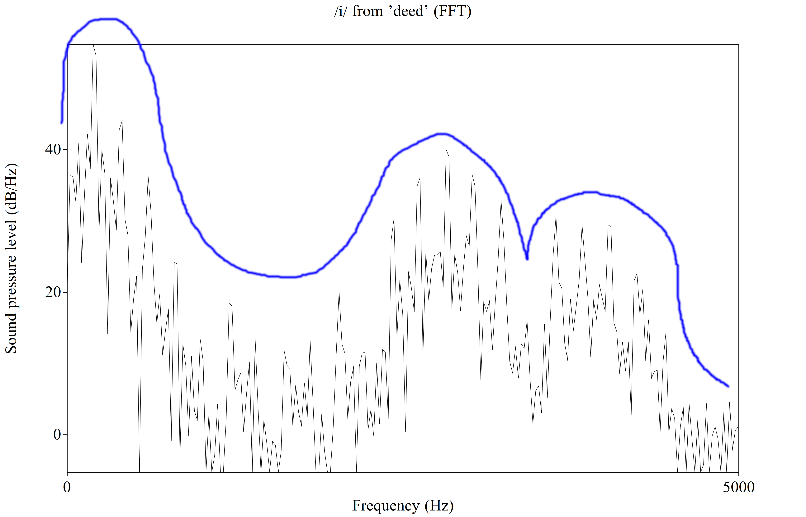
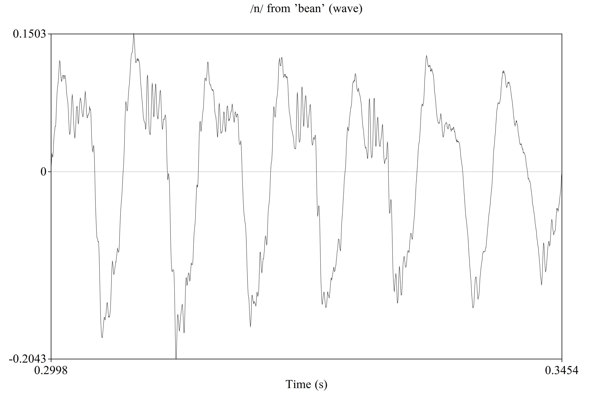
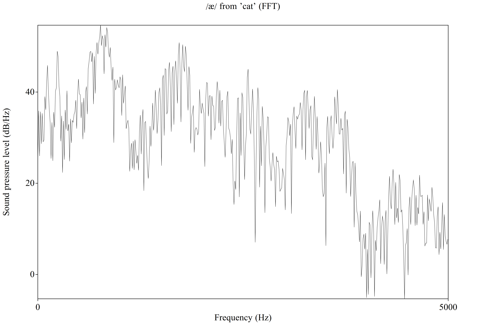
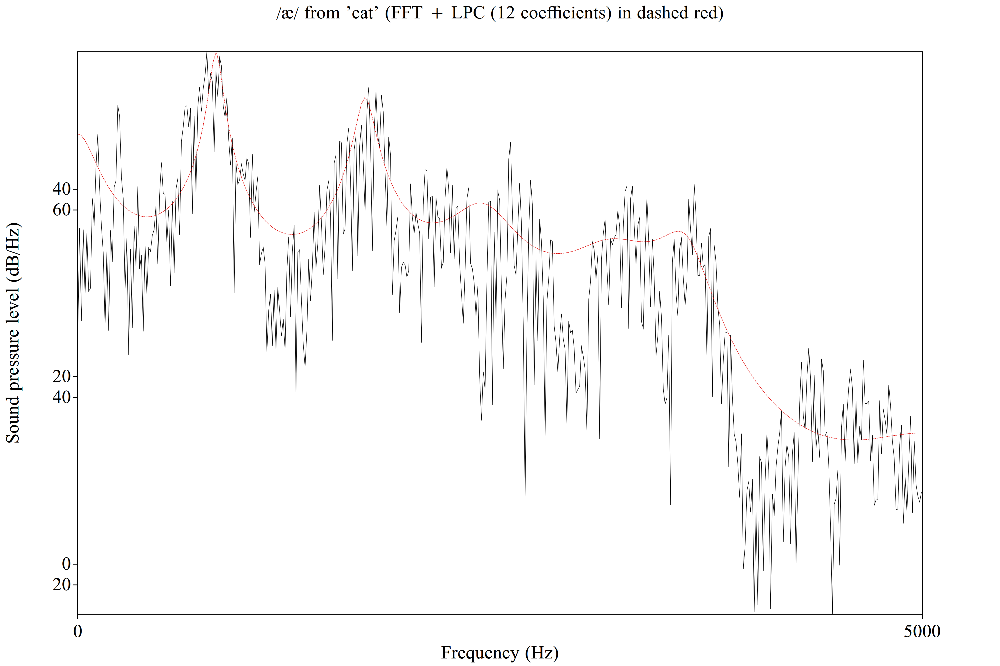
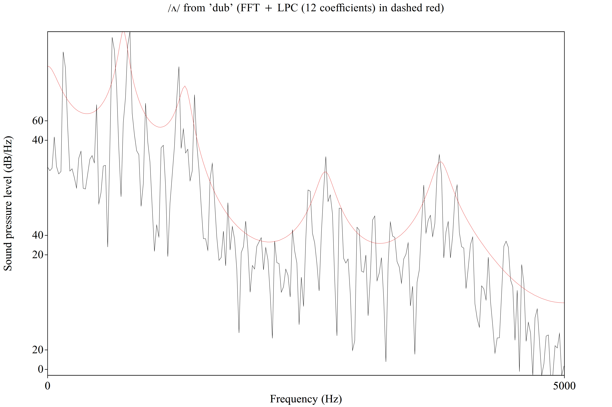
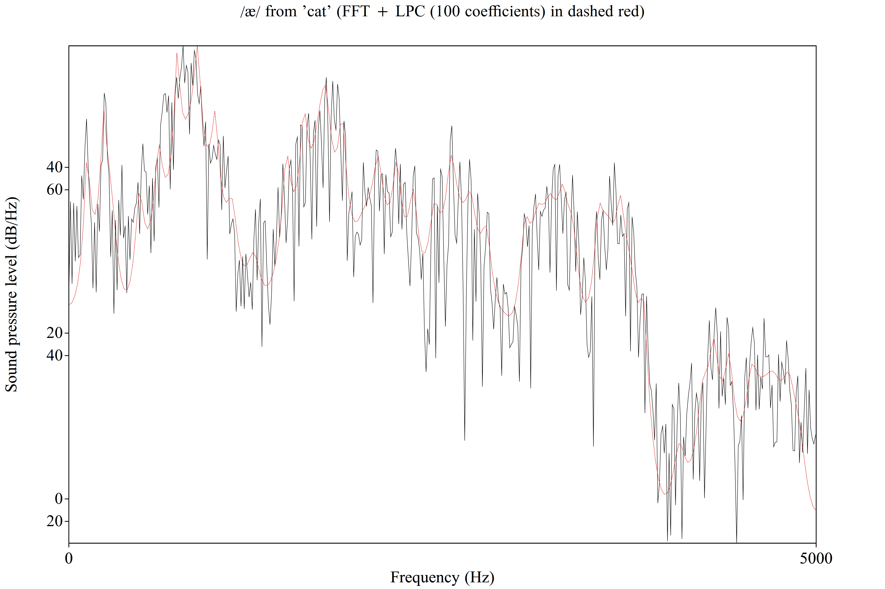
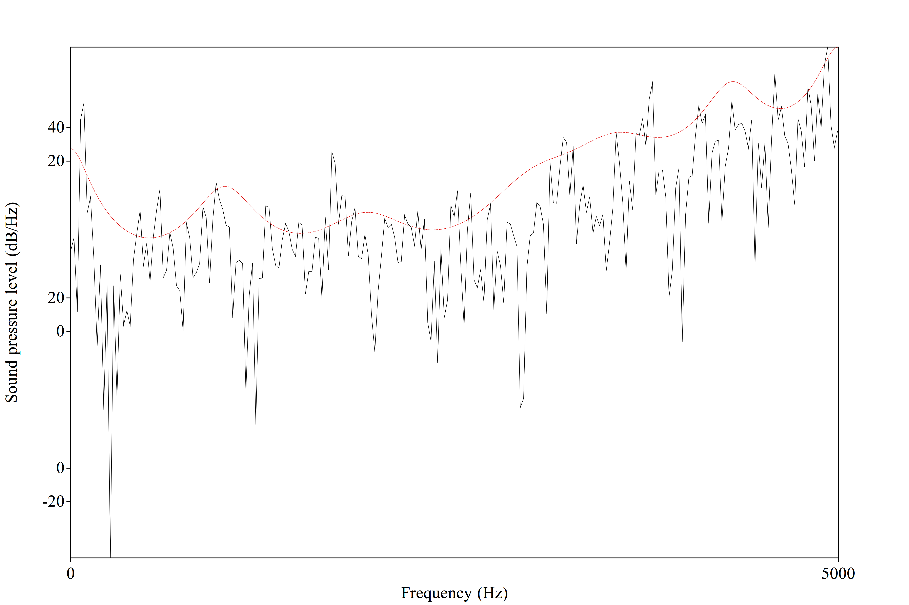
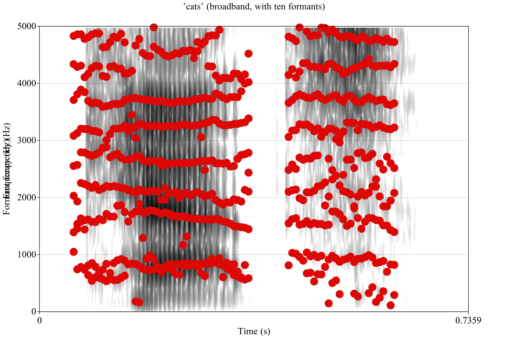
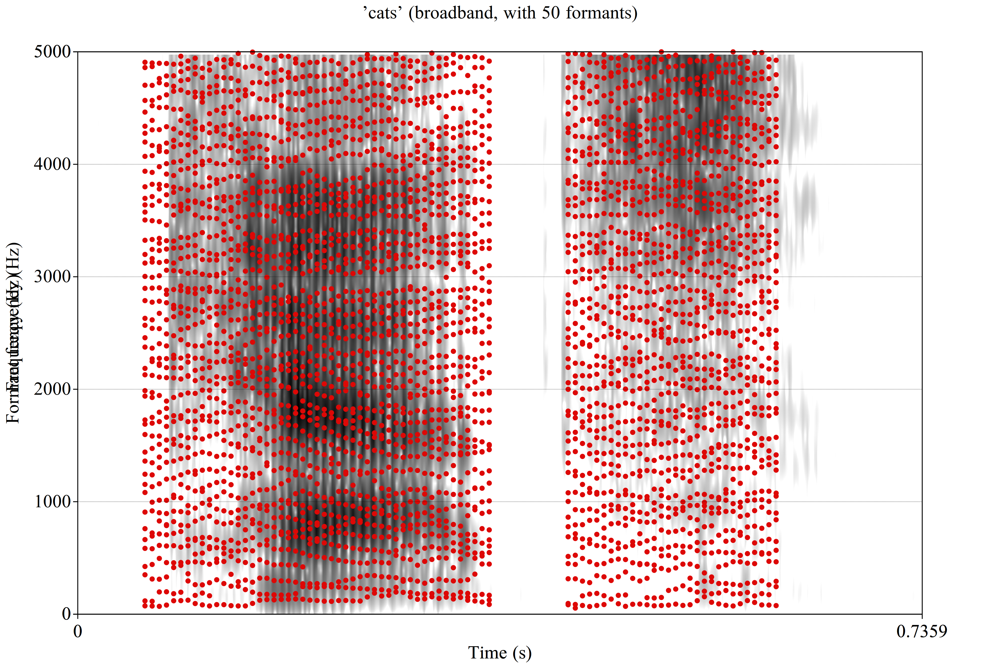

Source/Filter Review
Understanding LPC
Where is LPC useful?
What are the dangers of LPC?
What is f0?
What are the harmonics’ (relative) amplitudes?
Is the source signal noisy? Irregular?
This is a question of pitch tracking and source modeling
We’ll talk about this next time!
Where are the main poles which are filtering the source?
Where are the main zeroes which are filtering the source?
How are these poles and zeroes changing over time?
We use LPC for this!


It aims to estimate the filter only, and track changes to that filter over the duration of a signal
This was developed specifically for speech encoding, although it’s useful elsewhere
It’s linear in that it uses linear equations to model the speech signal
It’s predictive in that it looks at past moments to predict the present state
It can be used to (en)code and (de)code speech signals
Luckily, the math is very easy to find out there on the internet
… and boy do electrical engineers love making this opaque and equationy
Step 1: Division into frames
Step 2: Auto-Correlation Computation
Step 3: Coefficient Calculation
We’re going to take the sound and slice it into a series of overlapping frames
Usually this window is ~20-30ms
We’ll use a windowing function to smooth transitions between windows (e.g. Hamming Windowing)
This gives us a series of frames that we’ll evaluate step by step
We can assume/hope/pray that the vocal tract state is relatively steady in each 30 ms bucket
It is very common to do framing as a part of nearly any speech processing pipeline
The window function doesn’t tend to vary too much
Timescales sometimes do, but it’s usually around 20-30ms

Autocorrelated things are predictable on the basis of their immediate past
Speech is heavily autocorrelated
Prior chunks of the signal look a lot like the subsequent chunks
Tongues don’t tend to teleport



“Over the range of possible lags, here’s how the autocorrelation changes”
This will have multiple spikes (with the biggest at one period)
The timing and degree of these spikes actually tells us about the overall spectral shape

Sure, there’s source information in the autocorrelation function, but a good filter will minimize its importance when predicting the signal
We’re modeling the stuff that changes less often (e.g. the tongue, formants, etc) and just letting the source do its own little thing
We solve these equations to find the filter that minimizes the contributions of the source!
The ‘LPC model’ is a set of 10-20 coefficients describing the filter in detail







2 per 1000Hz below Nyquist plus three more
2 per formant + 3
Use too few, you’ll miss nuances
Use too many, you’ll overfit!
You will get exactly as many formants as you ask for!




The LPC coefficients describe a filter which can apply cleanly to any source you’d like
The LPC doesn’t model the source at all, instead, it treats it as noise!
So, we end up with a set of coefficients which describe a smooth filter function
This process still works even for voiceless sounds which have source and filter
You model a voiceless source using white noise, and then estimate the filter
LPC makes most sense for vowels and sonorants, but it’s not senseless for consonants or other sounds
This allows us to model the filter across an entire word
Each frame gets a different set of LPC coefficients
A word can be described with a series of sets of LPC coefficients, plus some source information
We take a signal
Step 1) We cut it into overlapping frames
Step 2) We do an autocorrelation analysis on these frames
Step 3) We use the autocorrelation function to get coefficients which model the filter and minimize the effect of the source
These coefficients estimate the shape of the filter
(Approximately) every formant finding algorithm uses LPC
Understanding LPC helps us understand how formants are found


Any time you have a source signal which reveals a filter, you can do LPC
You can use LPC to ‘deconstruct’ speech before transmission, and reconstruct it later
Combine the source and the filter and you have the signal again
More coefficients == More data == More fidelity
We’re going to see LPC used like this over and over again!
This allows for source-filter resynthesis, where you isolate the source and change the filter (or vice versa)
This allows you to ‘change the formants’ or ‘swap out the voice’
“Oh, this is capturing the filter” is a very common refrain in speech science!
Many things which do speech analysis ‘sort of do LPC’ even if they don’t directly
Common adage, but given to me by Rob Hagiwara
LPC is an estimate, but especially with noisy sources, it’s a noisy estimate
Often, Praat will disagree with itself (e.g. the found formant will change depending on small tweaks to settings or different methods)
LPC formant tracks tend to bounce around and have discontinuities
‘Computers are dumb, they do exactly what you tell them to’
LPC can be done where it shouldn’t be!





Formants aren’t meaningful during /s/ or /ʃ/ (e.g.)
LPC compression is less efficient for aperiodic sounds (meaning more data is required to transmit with fidelity)
LPC will work on anything, but isn’t useful for manythings
Frame Length
Window Shape (e.g. Hamming, Hann, Gaussian)
Number of Coefficients
Exact method of solving the equations
Methods of estimating the source
Source-Filter Theory isn’t just a phonetic idea, it’s a way of life
LPC estimates the filter by framing, measuring autocorrelation, and then estimating the filter which minimizes the effect of the source
With the filter, we can measure formants, compress speech, analyze other sounds, and compress anything
LPC isn’t the most trustworthy, will give you what you ask for, is less useful for aperiodic things and dirty data, and has lots of parameters to control
You will see LPC over and over in speech processing, and it’s your friend!